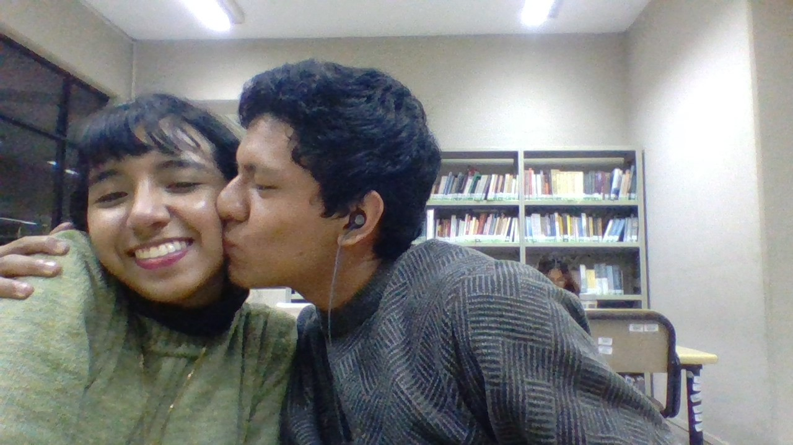
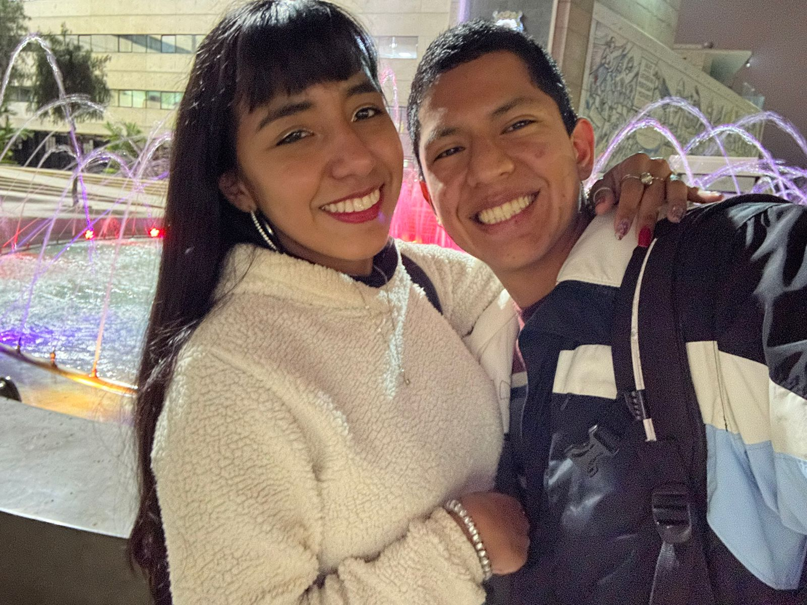
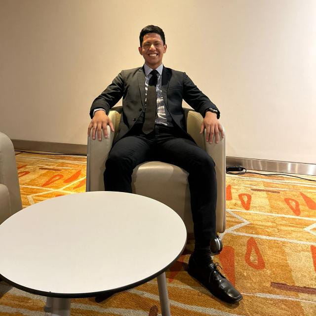

Siempre que la mira no puedo evitar darme cuenta de cuan pefecta es ella, puede ser su mirada o su sonrrisa o todo de ella es que simplemente siento que es la mujer a la que quiero dedicarle mis palabras siempre, porque ella me hacerca más a Dios.
Las cosas que le gustan
Llega la noche y vuelven mis escritos. Pare el tiempo, así como aquellas noches en las le pedía al reloj que se detenga mientras te escuchaba hablar sobre la vida, tus sueños, tu amor hacia tu familia, tus proyectos, tus esfuerzos, los profesores, las bromas, tus amigas, a Tuti, tu pasión por enseñar, esos detalles que están en mi cabeza porque eres imborrable. Eres genial querida Yesenia, eres fantástica, una mujer que al mirarla puedo admirar su belleza, lo que representas y el esfuerzo que haces, que bonito verte cada día y compartí tus esfuerzos. Oh querida Yesenia tu me inspiras, eres mi musa, y me di cuenta en el tiempo que eh pensado cuando eh mejorado a tu lado, eres un catalizador, eres mi inicio, eres... Indescriptible. Así pasa la noche y no quiero irme, mirar tus ojos es como mirar el infinito cielo estrellado ya que para mí eres una estrella que brilla en aquel firmamento que me cubre cada noche. Pensé en mi también, pensé en lo que soy, en lo que me eh esforzado en construir, en mi determinación, en mi camino, en mis proyectos, en mis pasiones, en mi dedicación para ser mejor, es sorprendente Yesenia como puede ser ese espejo que también me ayuda a mirarme y admirarme a mi a través de lo que puedo sentir por ti. Y así terminó, con esa mirada, esa mirada que es eterna en aquel instante en el que nos cruzamos, esa mirada que confirma lo que se piensa y no se dice.
Gracias por hacerme feliz Yesenia, cada actitud que tienes me hace sentir seguro, no voy a parar de decir que conocerte me salvo cuando estaba ahogandome, me reviviste con esos besos hermosos que me das tu sonrrisa me hizo resaner y tu manera de vivir, de ser me dio la fuerza para ser mejor, esta pagina es el resultado de mi esfuerzo por aprender nuevas cosas, cosas que me impulsaste a lograr, porque tu querer me impulsa, tu visión me dio esperanza, ahora me amo tambien a mi y me siento un hombre seguro, que cada día se aproxima a sus metas
Es por ello que quiero quererte y respetare desde ahora: “¿Qué es en verdad admirar a una mujer? Verla y sentirse inspirado, deleitarse en su belleza tanto que tus defensas se derrumban, que con gusto aguantarías toda pena y agobio por ella. Honrar su persona con tus actos y palabras.“ Eso es lo que siento por ti y tu muy bien lo sabes.